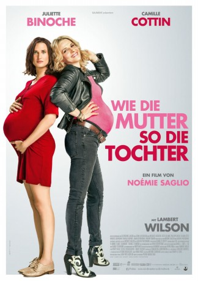

#8106 Wie die Mutter, so die Tochter
 
 IMDB-Wertung: 5.0 / 10
IMDB-Wertung: 5.0 / 10  Metascore: 0
Metascore: 0 
Avril und ihre Mutter Mado sind unzertrennlich, und doch könnten sie nicht unterschiedlicher sein. Die 30-jährige Avril ist verheiratet, einen sicheren Job und ist straff organisiert. Ihre Mutter hingegen führt das Leben eines ewigen Teenagers. Als beide jedoch gleichzeitig schwanger werden, steht eine ordentliche Portion Ärger ins Haus.
Jahr: 2017
Dauer: 94 Minuten
FSK:
Land: Frankreich Studio: Prokino FilmverleihTonspuren:
Untertitel:
Auflösung: 720p (1280x528) Größe: 2242 MB
Genre: Komödie
Regisseur: Noémie Saglio
Drehbuch: Agathe Pastorino
Soundtrack: Matthieu Chedid
Darsteller:
 Juliette Binoche als Mado
Juliette Binoche als Mado Camille Cottin als Avril
Camille Cottin als Avril Lambert Wilson als Marc Daursault
Lambert Wilson als Marc Daursault- Catherine Jacob als Irène
 Jean-Luc Bideau als Debulac
Jean-Luc Bideau als Debulac- Michaël Dichter als Louis
- Stéfi Celma als Charlotte
- Philippe Vieux als Michel
- Olivia Côte als Cécile
- Charlie Dupont als Romain
- Hugues Jourdain als Eudes
 Jana Bittnerova als Mme Stanlowa
Jana Bittnerova als Mme Stanlowa- Thierry Simon als Réceptionniste hôpital
- Charles Georges-Picot als Le client parfum toilettes
- Jean-Marc Charrier als Le médecin hôpital
- Isma Kébé als Emilien
- Hocine Mérabet als Hocine
- Gunilla Wingqvist als La femme enceinte
- Paul Jeanson als Marie femme enceinte
- Léonard Prain als Le serveur
- Marie-Philomène Nga als La mama africaine
- Sabine Pakora als La copine mama africaine
- Rani Bheemuck als La puéricultrice
- Eve Saglio-Dru Taylor als Enfant (uncredited)
Datei: X:\2017(N-Z)\Wie die Mutter, so die Tochter (2017, FSK, 1280x528).mkv seit 24.01.2018
Festplatte: HD 2017(A-Z)-2018(A-F)
 Es gibt insgesamt 170 Filme in der Gruppe '2017(N-Z)'
Es gibt insgesamt 170 Filme in der Gruppe '2017(N-Z)'